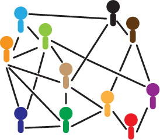

Research
I'm interested in applications of geometry and topology to the analysis of data, including networks.Network Data Analysis group at OSU
- NDA group .
Topology and Geometry and Data Analysis group at OSU
Manuscripts in preparation and preprints
-
 A. Elchesen and F. Memoli. The reflection distance between zigzag persistence modules
. Arxiv Preprint, May 2018.
A. Elchesen and F. Memoli. The reflection distance between zigzag persistence modules
. Arxiv Preprint, May 2018.
- F. Memoli and O. Okutan. Quantitative simplification of filtered simplicial complexes. Arxiv Preprint, January 2018.
- F. Memoli and O. Okutan. The distortion of the Reeb quotient map on Riemannian manifolds. Arxiv Preprint, January 2018.
- F .Memoli and O. Okutan. Reeb posets and tree approximations. Arxiv Preprint, January 2018.
- U. Bauer, C. Landi, and F. Mémoli. The Reeb Graph Edit Distance is Universal. Arxiv Preprint, January 2018.
- S. Chowdhury and F. Mémoli. Persistent Homology of Asymmetric Networks: An Approach Based on Dowker Complexes. Version 1 -- Arxiv Preprint, August 2016. Here is Version 2 -- Arxiv Preprint, January 2018.
- F. Memoli, A. Sidiropoulos, K. Singhal. Sketching and Clustering Metric Measure Spaces. Arxiv Preprint, January 2018.
- W. Kim and F. Memoli. Stable Signatures for Dynamic Metric Spaces via Zigzag Persistent
Homology. Arxiv Preprint, December 2017.
- S. Chowdhury, N. Clause, F. Memoli, J.A. Sanchez, and Z. Wellner. New families of simplicial filtration functors. Arxiv Preprint, December 2017.
- S. Chowdhury. Convergence of Hierarchical Clustering and Persistent Homology Methods on Directed Networks. Arxiv Preprint, November 2017.
- S. Chowdhury, D. Dai, and F. Mémoli. The Importance of Forgetting: Limiting Memory Improves Recovery of Topological Characteristics from Neural Data. Arxiv Preprint, October 2017.
- S. Chowdhury and F. Mémoli. Distances and Isomorphism between Networks and the Stability of Network Invariants. Arxiv Preprint, August 2017.
- F. Mémoli. A Distance Between Filtered Spaces Via Tripods. Arxiv Preprint, April 2017.
- P. Frosini, C. Landi, and F. Mémoli. The persistent homotopy type distance. Arxiv Preprint, January 2017.
- Excisive Hierarchical Clustering Methods for Network Data
G. Carlsson, F. Mémoli, A. Ribeiro, S. Segarra. ArXiv preprint, 2016.
- S. Chowdhury and F. Mémoli. Constructing geodesics on the space of compact metric spaces. Arxiv Preprint, 2015..
- S. Segarra, G. Carlsson, F. Mémoli, A. Ribeiro. Metric Representations of Network Data. 2015
- Curvature Sets over Persistence Diagrams. Facundo Mémoli. Preprint.
- Network Motifs, Distances between Networks, and the Stability of invariants. Samir Chowdhury and Facundo Mémoli. Preprint.
- Axiomatic Construction of Hierarchical Clustering in Asymmetric Networks G. Carlsson, F. Mémoli, A. Ribeiro, S. Segarra. Preprint
- Gromov-Hausdorff and Gromov-Wasserstein distances in Euclidean spaces. F. Mémoli. [in preparation].
- Gromov-Wasserstein distances for Partial Shape Matching. F. Mémoli. [in preparation].
- Local Scale Selection for Exploratory Visualization and Analysis of Massive Datasets. G.Carlsson, F. Mémoli and G.Singh. [preprint-- March 2009].
- On a connection between the use of Persistence Topology for shape matching and the Gromov-Haudorff distance. F. Mémoli. [preprint-- July 2008].
Networks
- G. Carlsson, F. Mémoli, A. Ribeiro, and S. Segarra. Admissible Hierarchical Clustering Methods and Algorithms for Asymmetric Networks. IEEE Transactions on Signal and Information Processing over Networks. December 2017.
- . S. Chowdhury and F. Mémoli. Persistent Path Homology of Asymmetric Networks. SODA 2018. ArXiv version and proceedings.
- G. Carlsson, F. Mémoli, A. Ribeiro, and S. Segarra. Hierarchical Clustering of Asymmetric Networks.. Advances in Data Analysis and Classification. October 2017.
-
Hierarchical Representations of Network Data with Optimal Distortion Bounds
. Z. Smith, S. Chowdhury, and F. Mémoli. Asilomar 2016.
- Persistent Homology of Directed Networks. S. Chowdhury and F. Mémoli. Asilomar 2016.
- Quasimetric embeddings and their applications. F. Mémoli, A. Sidiropoulos, and V. Sridhar. [Arxiv version:]. [Conference version:] 43rd International Colloquium on Automata, Languages, and Programming (ICALP), 2016. [Journal version:] Algorithmica, 2018.
Metric Geometry and Data
- Improved Error Bounds for Tree Representations of Metric Spaces. . S. Chowdhury, F. Mémoli, and Z. Smith. NIPS 2016.
- Metric structures on networks and applications. S. Chowdhury and F. Mémoli. Allerton 2015.
- Some properties of Gromov-Hausdorff distances. F. Mémoli. Discrete and Computational Geometry. February 2012. [BibTex].
- A spectral notion of Gromov-Wasserstein distances and related methods. F. Mémoli. Journal of Applied and Computational Harmonic Analysis 30 (2011), pp.363-401. [BibTex]
- Metric structures on datasets: stability and classification of algorithms . F. Mémoli. Lecture Notes in Computer Science, 2011, Volume 6855/2011, 1-33. Proceedings of the 14th international conference on Computer analysis of images and patterns. CAIP 2011 [BibTex]
- Gromov-Wasserstein distances and the metric approach to object matching. F. Mémoli. Foundations of Computational Mathematics. 11(4), August 2011, pp. 417-487(71). [BibTex]
- One Point Isometric Matching with the Heat Kernel With M. Ovsjanikov, Q. Mérigot, and L. Guibas. Proc. Eurographics Symposium on Geometry Processing (SGP) 2010. [BibTex].
- Gromov-Hausdorff stable signatures for shapes using persistence, with F. Chazal, D. Cohen-Steiner, S. Oudot and L. Guibas. SGP-2009. [BibTex]
- Gromov-Hausdorff distances in Euclidean spaces. F. Mémoli. NORDIA-CVPR-2008. [BibTex].
- Spectral Gromov-Wasserstein distances for shape matching NORDIA-ICCV-2009. [BibTex].
- On the Use of Gromov-Hausdorff Distances for Shape Comparison. F. Mémoli. Symposium on Point Based Graphics 2007, Prague, September 2007. [BibTex].
- A theoretical and computational framework for isometry invariant recognition of point cloud data. Facundo Mémoli and Guillermo Sapiro. Found. Comput. Math. 5 (2005), no. 3, 313--347. [BibTex]
- Comparing Point Clouds. Facundo Mémoli and Guillermo Sapiro. SGP 2004 . [BibTex].
Clustering Methods
- Admissible Hierarchical Clustering Methods and Algorithms for Asymmetric Networks. G. Carlsson, F. Memoli, A. Ribeiro and S. Segarra. Arxiv preprint. IEEE Transactions on Signal and Information Processing over Networks. Volume: PP, Issue: 99, 2017.
- Axiomatic Construction of Hierarchical Clustering in Asymmetric Networks. G. Carlsson, F. Memoli, A. Ribeiro and S. Segarra. Arxiv preprint. (this is a complete report on the current status ofour project).
- Hierarchical Quasi-Clustering Methods for Asymmetric Networks. G. Carlsson, F. Memoli, A. Ribeiro and S. Segarra. ICML 2014.
- Alternative Axiomatic Constructions for Hierarchical Clustering of Asymmetric Networks. G. Carlsson, F. Memoli, A. Ribeiro and S. Segarra. IEEE Global Conference on Signal and Information Processing. 2013.
- Hierarchical Clustering Methods and Algorithms for Asymmetric Networks. G. Carlsson, F. Memoli, A. Ribeiro and S. Segarra. Asilomar Conference on signals, systems, and computers. 2013.
- Axiomatic Construction of Hierarchical Clustering in Asymmetric Networks. G. Carlsson, F. Memoli, A. Ribeiro and S. Segarra. IEEE International Conference on Acoustics, Speech and Signal Processing (ICASSP). 2013.
- Classifying Clustering Schemes. G. Carlsson and F. Mémoli. Foundations of Computational Mathematics. May 2012. [BibTex].
- Characterization, stability and convergence of hierarchical clustering algorithms. G.Carlsson and F. Mémoli. JMLR, 11(Apr):1425--1470, 2010. [BibTex].
- Multiparameter clustering algorithms. G.Carlsson and F. Mémoli. IFCS 2009. [BibTex].
- Some ideas for formalizing clustering schemes. G.Carlsson and F. Mémoli. NIPS 2009 workshop "Clustering: science or art?" . See talks section for the talk materials.
- Persistent Clustering and a Theorem of J. Kleinberg. G. Carlsson and F. Mémoli. August 2008, Arxiv.
- Stability of clustering methods with Gunnar Carlsson. Mathematisches Forschungsinstitut Oberwolfach Report No. 29/2008, "Computational Algebraic Topology". [BibTex].
Topological data analysis
- Topological Analysis of Nerves, Reeb Spaces, Mappers, and Multiscale Mappers
Tamal K. Dey, Facundo Mémoli, Yusu Wang. SOCG 2017. ArXiv version.
- Multiscale Mapper: A Framework for Topological Summarization of Data and Maps Tamal K. Dey, Facundo Mémoli, Yusu Wang. SODA 2016. Arxiv preprint. SODA version.
- A topological paradigm for hippocampal spatial map formation using persistent homology. Y. Dabaghian, F. Mémoli, L. Frank, G. Carlsson. PLoS Computational Biology 8(8): e1002581. doi:10.1371/journal.pcbi.1002581. 2012. [BibTex].
- Topological Analysis of Population Activity in Primary Visual Cortex. G. Singh, F. Mémoli, T. Ishkhanov, G. Carlsson, G. Sapiro and D. Ringach. Jounal of Vision, Volume 8, Number 8, Article 11, Pages 1-18. [preprint version is linked here, see the publisher's site for the journal version].[BibTex].
- Topological Methods for the Analysis of High Dimensional Data Sets and 3D Object Recognition. G. Singh, F. Mémoli and G. Carlsson. Symposium on Point Based Graphics 2007, Prague, September 2007. [BibTex].
- The Shape of Data and Probability Measures. D. Díaz, F. Mémoli, and W. Mio. To appear Applied and Computational Harmonic Analysis, 2018. [Arxiv Preprint 2015].
- Consistent Partial Matching of Shape Collections via Sparse Modeling. L. Cosmo, E. Rodola, A. Albarelli, F. Memoli, D. Cremers. In Computer Graphics Forum, Wiley, 2016.
- Multiscale Covariance Fields, Local Scales, and Shape Transforms. D. Díaz, F. Mémoli, and W. Mio. Proc. Geometric Science of Information, Paris, France, 2013. [BibTex].
- Local scales of embedded curves and surfaces. T.M. Le and F. Mémoli. Journal of Applied and Computational Harmonic Analysis. December 2011. [BibTex]. .
- Meshless Geometric Subdivision. Facundo Mémoli, Carsten Moenning, Guillermo Sapiro, Nira Dyn and Neil Dodgson. Graphical Models Volume 69, Issues 3-4, May-July 2007, Pages 160-179. [BibTex].
- Brain and surface warping via minimizing Lipschitz extensions. Facundo Mémoli, Guillermo Sapiro, and Paul Thompson. MFCA-2006 International Workshop on Mathematical Foundations of Computational Anatomy. MICCAI. [BibTex].
- Implicit Brain Imaging. Facundo Mémoli, G. Sapiro and P.M. Thompson. (2004). NeuroImage, Special Issue on Mathematics in Brain Imaging, Thompson, P.M., Miller, M.I., Ratnanather, J.T., Poldrack, R., Nichols, T.E., [eds.]. [BibTex].
- Distance functions and geodesics on submanifolds of ${\Bbb R}\sp d$ and point clouds. Facundo Mémoli and Guillermo Sapiro. SIAM J. Appl. Math. 65 (2005), no. 4, 1227--1260. [BibTex].
- Solving variational problems and partial differential equations mapping into general target manifolds. Facundo Mémoli, Guillermo Sapiro and Stanley Osher. J. Comput. Phys. 195 (2004), no. 1, 263--292. [BibTex].
- Fast computation of weighted distance functions and geodesics on implicit hyper-surfaces. Facundo Mémoli and Guillermo Sapiro. J. Comput. Phys. 173 (2001), no. 2, 730--764. [BibTex].
- Distances between datasets. In Modern Approaches to Discrete Curvature pp 115-132. Springer 2017.
- Variational problems and partial differential equations on implicit surfaces: bye bye triangulated surfaces? Mémoli, Facundo; Bertalmio, Marcelo; Cheng, Li-Tien; Sapiro, Guillermo; Osher, Stanley Variational problems and partial differential equations on implicit surfaces: bye bye triangulated surfaces? Geometric level set methods in imaging, vision, and graphics, 381--397, Springer, New York, 2003. [BibTex].
- Computing with Point Cloud Data. Mémoli, Facundo; Sapiro, Guillermo. Statistics and Analysis of Shapes (Modeling and Simulation in Science, Engineering and Technology). Birkhauser; 1 edition (May 3, 2006). [BibTex].
- PhD Thesis
"Estimation Of Distance Functions And Geodesics And Its Use For Shape Comparison And Alignment: Theoretical And Computational Results." University of Minnesota, May 2005. [BibTex]
- MSci. Thesis
Distance Maps on Implicitly Defined Manifolds. Universidad de la Rep\'ublica. Uruguay, 2001. [BibTex]